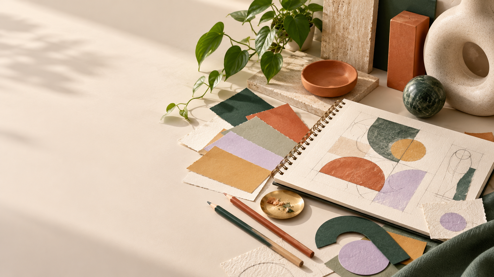

MELICIA PARKER / CREATIVE PORTFOLIO
A little thought.
A lot of design.
A collection of ideas, visual experiments and design thinking. Discover the colour, form and intention behind every composition.

THE PURPOSE
A study in visual communication.
Welcome to this graphics design portfolio. Graphic design combines typography, imagery, colour and layout to communicate ideas to an audience. Effective design considers both how something looks and how clearly its message can be understood.
This portfolio connects design theory with visual demonstrations and practical coursework. Its purpose is to explain key concepts, explore responsible use of creative work, and show how design decisions support communication.
THE NOTEBOOK
There’s a reason
behind the design.
Explore the ideas that shape the work.
What this portfolio demonstrates
A successful design does more than decorate a page: it makes a message easier to notice, understand and act on. This portfolio connects design vocabulary with visual evidence, responsible sourcing and practical production choices. The theory pages include annotated demonstrations, comparisons and examples of how to apply each concept.
| Learning area | Evidence in this portfolio |
|---|---|
| Responsible practice | Copyright in Jamaica, licensing decisions, attribution and ethical use of assets. |
| Composition | Illustrated principles with applications to posters, logos and page layouts. |
| Visual vocabulary | Explanations and examples of line, shape, texture, space, form and value. |
| Colour decisions | Colour models, palette relationships, contrast and accessible communication. |
| Digital production | Raster/vector comparison, resolution, compression and export decisions. |
| Practical application | A dedicated Artefacts page presenting seven project categories and their design focus. |
A design process: from brief to finished work
- Understand the brief. Identify the audience, purpose, message and required output. A poster announcing an event has different priorities from a small logo.
- Research responsibly. Collect references and record the creator, licence and source of any assets. Inspiration should guide a new solution rather than become an uncredited copy.
- Explore ideas. Sketch more than one composition. Consider focal points, alignment, colour and the relationship between text and image.
- Develop the artwork. Choose tools and formats suited to the work. Use layers, sensible file names and editable source files.
- Evaluate and revise. Check accuracy, legibility, visual hierarchy and accessibility. Test the design at its intended size.
- Export and reflect. Keep the editable master, export a suitable presentation file and explain what worked and what could improve.